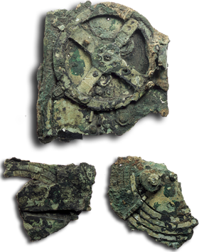

Historia
El Mecanismo de Anticitera (MA), construido por griegos en el siglo II a. C., cayó al mar en 70-50 a.C. y fue encontrado en 1901 cerca de la isla de Antikythera. La UNISON, Universidad de Atenas y Relojes Olvera III Generación construyeron una réplica monumental funcional del MA, única en el mundo: el MAMH, que fue inaugurado el 8 de febrero 2024, en la Plazoleta de Antikythera del Campus Hermosillo de la UNISON, frente al edificio 3H del DIFUS.
